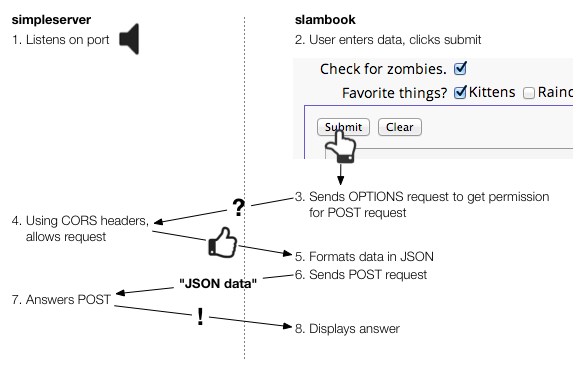
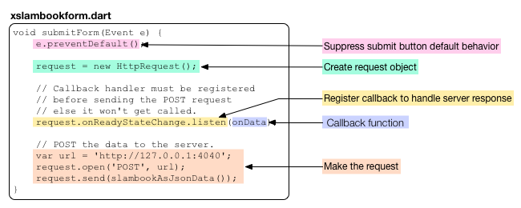
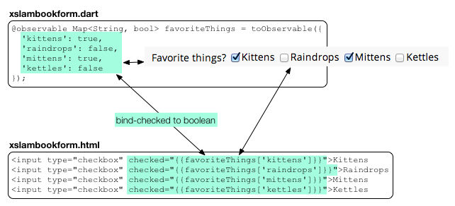

从表单中获取数据
用表单从用户获取数据。
很多 web 应用依赖表单来收集数据，然后 把数据发送到服务器。 一个表单通常包含多个输入元素 来收集各种类型的数据，例如 名字和地址、生日、Emai 地址 等等。 HTML 支持几种输入元素， 有 text fields、 text areas、 radio buttons、 和 checkboxes。 HTML5 添加了一些具体的输入元素，例如 email 和 password fields、 color pickers、 date and time widgets、以及 range elements。
该示例包含了一个客户端和一个服务器。 客户端用 Polymer 来显示用户界面 （一个包含了多个输入元素的表单）并 和 Dart 数据同步。 使用 Dart core 库的几个类实现 客户端 和服务器的通信， 这些类有 streams、Futures、HttpRequest 等。 服务器用 CORS 允许跨站点请求。
- 关于表单
- 关于 slambook 示例
- 提交一个表单
- 重置一个表单
- 创建一个服务器并监听一个端口
- 处理 OPTIONS 请求
- 设置 CORS 请求头
- 处理 POST 请求
- 客户端-服务器 web 应用的秘方
- Polymer 中的双向数据绑定
- 其他资源
- 接下来干啥？
关于表单
一个表单通常有一个 action 和 一个 method 属性分别 指定了发送数据的 URL 和 发送数据的方式。 action 和 method 可以在 HTML 代码中指定，也可以 在 Dart 代码设置或者用 Dart 库 来动态的执行 action。
下面从一个基本的表单来
学习下 actioin、method、和 input 元素以及表单的默认行为。
下面的表单用 Google 来搜索
<form> 标签中的内容，
如果 checkbox 选中则搜索 dartlang.org 的内容
如果 没有选中则搜索网络内容。
该示例为 search_form，
默认用 “Cookbook” 搜索
dartlang.org
内容。
下面是创建上面表单的代码：
<form action="http://www.google.com/search"
method="GET"
target="_blank">
...
</form>
关注下 action 和 method 属性：
| 属性 | 描述 |
|---|---|
| action | URL 指定了发送数据的地址。 这里为 Google 搜索，当点击按钮的时候 输入框的内容会附加到 URL 中。 |
| method | 指定了如何发送数据。通常用 GET 来请求数据资源，而 POST 来往服务器提交数据。 |
下面是表单中三个 input 元素的代码， 一个文本输入框、一个提交按钮和一个 checkbox：
<input type="text" name="q"
value="Cookbook" size="31" maxlength="255">
<input type="submit" value="Google Search">
<label>
<input type="checkbox" name="sitesearch"
value="dartlang.org" checked> Search dartlang.org<br>
</label>
checkbox 用一个 label 标签包围着， 这样你可以通过点击 checkbox 或者 label 文本来选中 checkbox。
该 HTML 代码默认提供了一些行为：
- <input type="submit" ...>
- 创建一个特殊的按钮， 当点击该按钮的时候收集表单中的数据。 根据 action 和 method 属性 来组成请求 URL 地址并提交 数据到该 URL 地址。
- name="q"
- name="sitesearch"
-
指定输入框和 checkbox 的名字。
在表单中， input 元素的 name 设置了表单数据的名字。 在该示例中，输入框的文本值为
q的值，而 checkbox 的值 用于sitesearch，这两个都是 合法的 Google 搜索 URL 的组成部分。 当用户点击提交按钮的时候， 名字和输入的值将附加到 搜索 URL 的后面提交。 例如：http://www.google.com/search?q=Cookbook&sitesearch=dartlang.org
上面的代码只是通过 HTML 实现，没用 Dart 或者 JavaScript。 由于该实例比较简单，用 HTML 表单 的默认行为 就够了。 对于保护了大量数据的表单， 或者需要和特殊的服务器通信的 web 应用， 你通常需要通过代码来处理表单。
下面的示例在代码中用 POST 请求 来发送复杂的表单数据到服务器。
关于 slambook 示例
该示例包含两个程序。
-
首选， 是一个名字为
slambookserver的服务器程序， 该程序监听 4040 端口并处理 POST 和 OPTIONS 请求， 把客户端发送的消息打印出来并返回一个确认消息。 服务器用 CORS 请求头来 允许来自于不同源的请求。 -
然后， 一个名字为
slambook的 客户端程序， 提供了一个可以输入各种信息的表单。 用 Polymer 双向数据绑定来绑定 input 元素和 Dart 变量。 当用户点击提交按钮的时候， Dart 代码把输入数据格式化为 JSON 字符串， 发送一个 OPTIONS 请求获取服务器的许可， 然后用一个 POST 请求发送数据。 当客户端收到服务器的响应后， 显示出来返回的结果。
下图显示了 客户端和服务器通信的流程。

动手试试！ 输入一些数据，然后点击 Submit 按钮。
由于你还没在你的电脑上运行服务器端程序，所有 点击提交按钮你会发现显示的结果为 “No server”。 下面来运行服务器。
运行服务器
从 教程实例 中下载 该服务器的代码， 名字为 slambookserver.dart 。
从命令行运行该代码：
% dart slambookserver.dart Listening for GET and POST on http://127.0.0.1:4040
现在，可以用上面的应用再次提交数据了。
下面的内容解释该示例的服务器端和客户端代码如何实现的。
在客户端可以学习如下内容：
- 提交表单
- 重置表单
- 用 Polymer 来绑定表单数据到 Dart 变量。
在服务器端可以学习如下内容：
- CORS headers
- 处理 OPTIONS 请求
- 处理 POST 请求
提交一个表单
先来看看数据是如何提交到服务器的。
在一开始的 search_form 示例中依赖 action 和
method属性的默认行为来指定
提交的方式
和地址。
而在 slambook 示例中，
通过代码来
控制提交的过程。
- 首先，表单没有设置 action 和 method。
- 然后，提交按钮有个 Dart 点击事件监听器。
- 第三， Dart 点击事件监听器阻止 默认的提交数据行为。
- 最后，用 Dart 库提供的功能把表单数据提交 到服务器。
slambook 示例中的表单是
一个名字为 tute-slambook-form 的
自定义元素，通过如下代码初始化：
<div class="container"> <form is="tute-slambook-form" id="slambookform"></form> </div>
上面的表单中，既没有 action 也没有 method 属性。
提交按钮的行为用 Dart 鼠标点击事件来
处理。
下面是创建提交按钮的 HTML 代码并
绑定了一个 Dart 鼠标点击监听器。
<div class="submitarea">
<input type="submit" value="Submit" on-click="{{submitForm}}">
...
</div>
下面是鼠标点击监听器 submitForm() 函数的代码：

下面来逐步分析下来监听器代码。
阻止默认行为
即使没有 action 和 method 属性，
提交按钮也有默认行为，
该默认行为在 slambook 示例中是没用的。
所有首先需要在代码中调用函数
e.preventDefault() 来
阻止默认行为。
void submitForm(Event e) {
e.preventDefault(); // Don't do the default submit.
...
}
设置并触发 POST 请求
然后，代码创建了一个
HttpRequest
对象。
代码中用 new 来创建 HttpRequest 对象，
然后配置一些参数。
HttpRequest 类有个获取 GET 请求返还结果
为字符串的函数 HttpRequest。
然后代码在 HttpRequest 对象中设置了一个回调函数 onData，
该函数
在接受到服务器响应的时候触发。
在后面讲会介绍 onData() 函数的实现。
重要： 在开始请求之前必须设置 回调函数!
request = new HttpRequest();
request.onReadyStateChange.listen(onData);
var url = 'http://127.0.0.1:4040';
request.open('POST', url);
request.send(slambookAsJsonData());
然后，代码筒指定 的 URL 和端口参数来 发出一个 POST 请求。
最后的代码把 JSON 字符串发送到服务器。 有时，数据位字节流。 但是该示例中的数据比较短可以一次发送完毕。 该请求是异步的， 所有 send() 函数很快就返回了。
监听服务器应答
HttpRequest 对象负责和服务器通信。
通过 HttpRequest 对象的 readyState 变量
可以获取通信的状态。
readyState 有五种可能的值：
unsent（未发送）、 opened（已建立连接）、 headers received（收到响应头）、 loading（正在接受结果）、 和 done（请求完成）。
当 readyState 改变的时候，HttpRequest 会触发事件，然后会调用
onData() 回调函数。
注意在 onReadyStateChange 注册
的回调函数 onData。
request.onReadyStateChange.listen(onData);
listen() 函数只需要一个签名 为 void onData(T) 的回调函数即可。 listen() 函数还有三个可选的参数， 例如 一个错误处理函数。
onData() 回调函数功能比较简单：
void onData(_) {
if (request.readyState == HttpRequest.DONE &&
request.status == 200) {
// Data saved OK.
serverResponse = 'Server Sez: ' + request.responseText;
} else if (request.readyState == HttpRequest.DONE &&
request.status == 0) {
// Status is 0...most likely the server isn't running.
serverResponse = 'No server';
}
}
首先检查请求是否成功完成了。
如果完成了，代码显示服务器返回的结果 （保存在 serverResponse 变量中），
该变量和 UI 中的文本输入框绑定在一起，
当该变量值发生变化的时候，
UI 会自动更新然后
服务器返回的值就显示出来了。
如果，请求完成了，但是出错了，
代码设置 serverResponse 值为一个错误信息，
然后显示给用户。
重置一个表单
reset 按钮是特殊的 HTML input 类型，默认情况下该 按钮清空所有表单中的数据。 该示例中，我们想让该按钮设置表单的数据为 初始值。 所有我们注册了一个鼠标点击事件来 阻止默认行为并 重置表单数据为默认数据。
void resetForm(Event e) {
e.preventDefault();
favoriteThings['kittens'] = false;
favoriteThings['raindrops'] = false;
favoriteThings['mittens'] = false;
favoriteThings['kettles'] = false;
theData['firstName'] = '';
theData['favoriteQuote'] = '';
theData['favoriteColor'] = '#FFFFFF';
theData['birthday'] = '2013-01-01';
theData['volume'] = '0';
theData['catOrDog'] = 'cat';
theData['music'] = 0;
theData['zombies'] = false;
serverResponse = "Data reset.";
}
创建一个服务器并监听一个端口
下面来看看响应 HTTP 请求
的 slambookserver 服务器程序。
该服务器代码基于
Chris Buckett 写的
使用 Dart 的 JSON Web 服务 一文中的实现。
该服务器监听 4040 端口并且只 响应 POST 和 OPTIONS 请求。 在该两种类型请求中， 服务器都添加一个 CORS 请求头信息。 对于 POST 请求， 服务器返回一个简短的确认信息 来表明服务器收到了客户端发送的 JSON 数据。
来看看具体的代码。
下面是 slambookserver 的 main() 入口函数。 使用 HttpServer 类的 bind() 函数 来监听本机的 4040 端口，
final HOST = '127.0.0.1';
final PORT = 4040;
void main() {
HttpServer.bind(HOST, PORT).then(gotMessage, onError: printError);
}
bind() 函数返回一个 Future 对象，
Future 对象是从未来获取数据的一种方式。
通过 then() 函数，
代码在 Future 上注册了两个回调函数。
第一个函数 gotMessage() 在 Future 返回它的值的时候调用。
第二个函数 printError 在绑定端口出错的情况调用。
如果一个程序已经占用
了 4040 端口则就会发生错误。
for gotMessage() 的代码过滤 请求并根据请求类型调用不同的函数来处理每个请求。
void gotMessage(_server) {
_server.listen((HttpRequest request) {
switch (request.method) {
case 'POST':
handlePost(request);
break;
case 'OPTIONS':
handleOptions(request);
break;
default: defaultHandler(request);
}
},
onError: printError); // Listen failed.
print('Listening for GET and POST on http://$HOST:$PORT');
}
要处理其他的请求类型，
例如 GET 请求，只需要
在 case 语句中添加一个
case 'GET' 即可。
关于 Future 的简单介绍
在查看如何处理 OPTIONS 和 POST 请求之前先来 看看 Future 的介绍。
一个 Future 是从未来获取数据的一种方式。 使用 Future 来避免阻塞程序， 例如 如果请求的数据需要比较长时间的计算， 或者 需要访问磁盘 IO 操作。
当一个返回 Future 的函数被调用时， 会发生两种情况：
- 该函数保存到队列中，然后 立刻返回一个未完成的 Future 对象。
- 以后，当数据可用的时候， Future 对象使用数据或者错误信息来完成该操作。
要获取 Future 代表的数据， 需要用 then() 函数注册一个回调函数。 当 Future 完成的时候，会 调用该函数。
在该示例中， 服务器和客户端都使用 Future 来发送 请求和响应事件。 客户端-服务器程序应该总是使用 Future 来异步的处理通信和其他 IO 操作。
处理 OPTIONS 请求
slambook 客户端用 HttpRequest 类 来 提交 POST 请求。
在 web 应用中， 通常客户端和服务器都 运行在不同的源中，在该情况下的 POST 请求为 “preflighted”。 一个 “preflighted” 请求必须先发送一个 OPTIONS 请求 来判断该请求是否允许提交。 HttpRequest 类自动处理 preflight OPTIONS 请求。 而无需你手动处理。
服务器先获取 OPTIONS 请求。 下面是 slambookserver 服务器处理 OPTIONS 请求的代码。
void handleOptions(HttpRequest req) {
HttpResponse res = req.response;
addCorsHeaders(res);
print('${req.method}: ${req.uri.path}');
res.statusCode = HttpStatus.NO_CONTENT;
res.close();
}
代码比较简单明了：
- 获取 HttpResponse 对象，该对象代表服务器返回客户端的内容。
- 添加访问控制的 CORS 请求头
- 在控制台打印消息
- 标注该响应没有内容
- 关闭响应，并发送应答到客户端。
当客户端收到应答后， 里面的 CORS 请求头表明可以发送 POST 请求。
设置 CORS 请求头
服务器用如下代码来添加 CORS 请求头 信息到 OPTIONS 和 POST 请求中。 该函数在服务器应答中 （HttpResponse） 添加了 三个访问控制（Access-Control）请求头信息。
void addCorsHeaders(HttpResponse res) {
res.headers.add('Access-Control-Allow-Origin', '*, ');
res.headers.add('Access-Control-Allow-Methods', 'POST, OPTIONS');
res.headers.add('Access-Control-Allow-Headers',
'Origin, X-Requested-With, Content-Type, Accept');
}
前两个 CORS 请求头允许来自任意 地方的 POST 和 OPTIONS 请求。 第三个指定了服务器接受 的 POST 和 OPTIONS 请 求头信息。
关于 CORS 的详细信息请参考：
处理 POST 请求
下面是处理客户端 HTTP POST 请求的函数：
void handlePost(HttpRequest req) {
HttpResponse res = req.response;
print('${req.method}: ${req.uri.path}');
addCorsHeaders(res);
req.listen((List<int> buffer) {
// Return the data back to the client.
res.write('Thanks for the data. This is what I heard you say: ');
res.write(new String.fromCharCodes(buffer));
res.close();
},
onError: printError);
}
和处理 OPTIONS 请求一样， slambookserver 从 请求中获取 HTTP response 对象， 在控制台打印一个信息， 添加 CORS 信息到应答中。
然后监听来自 客户端 POST 请求的数据。 当 所有 的数据准备好后会 调用回调函数。 回调函数是一个函数字面字符串。 该函数的参数为一个装有 数字的 list。 每个数字都是一个字符代码， 其中每个代码可以为 UTF-16 格式代码。 你可以用 String.fromCharCodes() 函数 把字符代码转化为字符串。
HttpResponse 对象管理一个服务器用来向 客户端发送数据的数据流。 在数据回调函数中， slambookserver 在数据流中写入一条消息 和收到的数据。 实际上的服务器可以通过不同方式处理该数据， 比如保存起来 等。
当关闭数据流的时候，HttpResponse 对象 把数据发送到客户端。
客户端-服务器 web 应用的秘方
slambook 客户端-服务器示例可以作为 你客户端服务器 web 应用的起点，或者 作为创建你自己程序的参考。
下面是客户端需要实现的一些功能：
- 用表单来收集用户数据。
- 在表单中放置多少 input 元素来收集不同的数据。
- 用 Polymer 中的双向数据绑定来同步表单和 Dart 代码中的数据。
- 可以通过声明的方式 (在表单上定义 action 和 method 属性)
- … 或者通过代码 (在提交按钮上注册 Dart 函数)来发送数据
- 从 HttpRequest 对象获取服务器应答数据。
- 用 Future 对象来处理异步通信。
下面是服务器端代码需要实现的一些功能：
- 用 HttpServer 来启动一个服务器。
- 监听客户端请求。
- 用 CORS 请求头来设置每个请求的跨站点访问控制。
- 用 HttpResponse 来应答数据。
- 用 Future 对象来处理异步通信。
- 用数据流(Stream) 来写应答数据。
在 Dart 核心库中有一些对客户端和服务器端 提供支持的类。 注意，分别有两个 HttpRequest 类，一个在 dart:html 包 中用于客户端，一个在 dart:io 包中 用于服务器。
| 资源 | 库 | 描述 |
|---|---|---|
| HttpRequest | dart:html | Client-side HTTP request |
| HttpRequest | dart:io | Server-side HTTP request |
| HttpServer | dart:io | 服务器端对象来处理和客户端的通信 |
| HttpResponse | dart:io | 服务器端对象来响应客户端请求 |
| Streams | dart:async | 一个数据流 |
| Future | dart:async | 异步获取数据的一种方式 |
| JSON | dart:convert | JSON 转换器的默认实现 |
| Polymer | Polymer | 自定义元素、数据绑定、模板 |
Polymer 中的双向数据绑定
slambook 示例用 Polymer 提供的双向数据绑定功能来 绑定 input 元素和 Dart 变量。 如果用户修改了 input 元素中的值， Dart 中绑定的变量会自动更新。 或者 如果 Dart 代码修改了绑定变量的值， 则 UI 会自动更新。 定义一个自定义元素 简单介绍了自定义元素和 数据绑定。
该示例还用声明式事件处理 函数 来映射函数为 input 事件监听器。
在 slambook 示例中， 有多个 input 元素使用了双向数据绑定， 其中有一个新的 HTML5 元素。 下面表格介绍了 Polymer 中可用的双向数据绑定属性：
| 属性 | Dart 类型 | Input element |
|---|---|---|
| value | String | 任意元素 |
| selectedIndex | integer | 只允许选择一个元素的 <select> |
| checked | bool | individual radio buttons 或者 checkboxes |
在任意 input 元素中使用 value
value 属性支持任意 input 元素，
并且把元素 的值绑定到 Dart 字符串中。
该示例中的 text field、text area、color picker、 data chooser 和
一个 range 元素都使用了 value 属性。

(注意，上图中为了 阅读方便，一些装饰性的 代码给删除了。 )
在 Dart 代码中，一个名字为 theData 的 map 对象包含了
表单中的数据。 代码通过 @observable 注解和 toObservable() 函数
来绑定数据。
map 包含了每个 input 元素的 key-value 对， 其他 key 为
字符串。
用 value 绑定的元素都是 字符串。
HTML 代码通过 Dart 代码中的名字来访问
map 中的数据。
例如， color picker （颜色选择控件） 的值绑定到
theData['favoriteColor'] 中。
在下拉菜单中使用 selectedIndex
一个 <select> 元素包含一个或者多少 <option> 元素，
默认一次只能选择其中的一个元素。
一次选择一个元素的 select 通常用下拉菜单实现。
你可以用 selectedIndex 属性来绑定 Dart 整数到
下拉菜单上。
该整数代表选中的元素索引。
索引从 0 开始。
在 checkboxe 中使用 checked
用 checked 属性来绑定 Dart 布尔值到
只能选择一个的 checkbox 中。
下面每个 checkbox 绑定到 map 中的不同对象。

其他资源
- 处理客户端和服务器端通信 的代码基于 Chris Buckett 写 的文章 使用 Dart 中的 JSON Web Services 。
- 前一教程中， 动态获取数据 中介绍了如何使用 Dart 编辑器来实现一个 从服务器获取 JSON 文件 的客户端。
接下来干啥？
下一个教程， 使用 IndexedDB 将介绍如何用浏览器的 Indexed Database（索引数据库） 来在客户端保存数据。